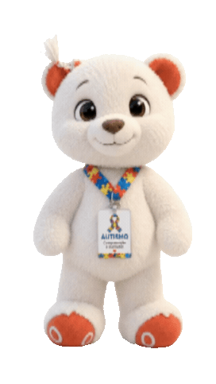
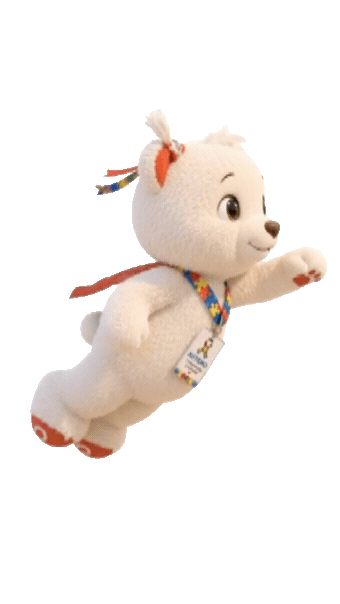
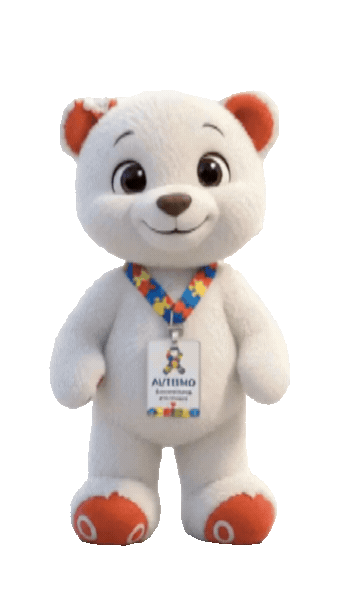

Escolha uma brincadeira para jogar só ou em dupla.


Escolha o modo de jogo! Voe sozinho ou junte-se em dupla cooperativa com Chuíri e Gato!

Escolha o modo de jogo! Quebre blocos sozinho ou jogue tênis de skate em 2 Jogadores!
Modo Livre · quatro oitavas
Incrível! Concluiu a canção e faturou +5 Moedas! 🪙
Escolha o modo de jogo desejado: